MixTape
Letting distributed teams collaborate on weekly Playlists through Slack.
MixTape
Letting distributed teams collaborate on weekly Playlists through Slack.
Description
A simple API integration that allows teams on Slack to contribute to a weekly Spotify Playlist with a randomly generated prompt.
By authorizing the app for access to both the Slack workspace and authorizer's Spotify account, the script will create an empty weekly playlist with the title "$COMPANY$ - $Prompt$" and then ask a Slack channel to add songs they feel meets the prompt. Example prompts include "Money Making Music", "Pump Up Jams", "Self-Care Sundays", and "00s Dance Music", among hundreds of others.
How it Works
1️⃣ All you have to do is install the app to the workspace, select a channel, and add the bot to the channel you've selected. The message will automatically be sent every Thursday at 12pm (EST).

2Ô∏è‚É£ Every prompt is randomly generated, and should describe a time, place, or feeling. Have a fun prompt idea? Hit me up and I'll add it to the list! üòÉ

3️⃣ The link included in the prompt will take you to the Spotify page that will grow as you and your teammates share your song selections!

That's it! Sit back and wait for the weekly prompt to land and prepare to share some of your favorite songs. üéâ
Inspiration
I have always wanted to build products around Music, and I love the idea of being able to build these playlists together with other people in your life. Sharing music has always been a love language of mine, and I think it's a great way to build company culture as well! I've enjoyed many Friday afternoons working with my coworkers while listening to new music, hearing a new artist they discovered, or sharing some throwbacks.
One thing that excites me about this project is the musical data we'll be able to collect from all of these Slack teams selecting songs to fit a certain vibe. Eventually I'll be able to aggregate the playlists and build deep data models to analyze what songs are the best matches for each playlist prompt. This will unlock cool little side features like combined playlists cross-workspace, building a collection of crowd-sourced playlists that fit certain moods, feelings, times, or places.